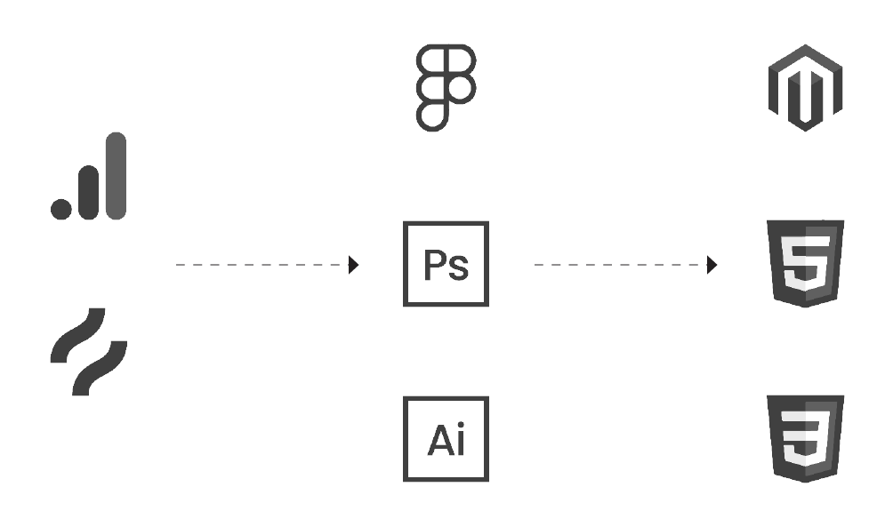

Kennards Hire Careers Page
Summary
The new careers section of the website was redesigned in response to pain points discovered during performance analysis and the need for overall aesthetic improvement. All content on the page was created to reflect and communicate Kennards Hire’s values and work environment affectively, positively impacting recruitment and hiring metrics.

Role: Research, Ideation, Wireframing, CMS
Tools Used: Hotjar, GA, Figma, Photoshop, Illustrator, Magento